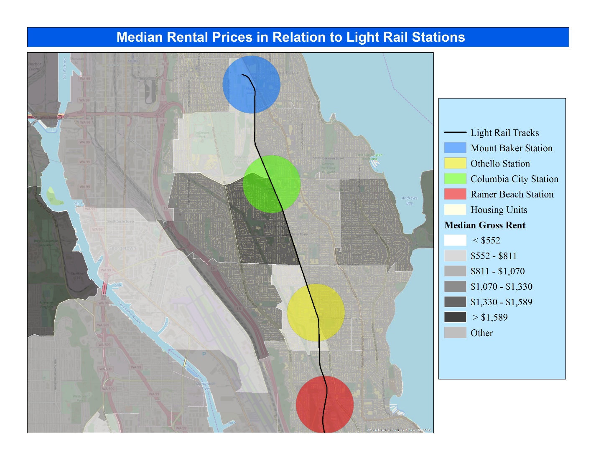

Housing Prices in Relation to Light Rail Stations
The data used to map in ArcMap were a mix of already existing shapefile available through ArcGIS Online and shapefiles provided by the City of Seattle.
One of the first things that was added to the map was a point at each Link light rail station along Martin Luther King Jr Way. This is so that the stations are more visible amongst the building plan layer and the average rent price layer. To further analyze the relationship between the spatial distribution of rented housing units and the light rail stations a buffer of 0.5 miles was generated around each point representing the stations. This was done to represent a comfortable walking distance to the stations in roughly 10 minutes.
. By properly analyzing all factors that may influence the phenomenon and factoring them into a project, I believe that this can create a more discernable explanation of what we see in this map. Thus, I believe my project can be improved by utilizing more relationships between different modes of transportation, especially roads and the use of cars and busses. It can also be improved by using more precise renting and housing data to create more reliable and valid results.